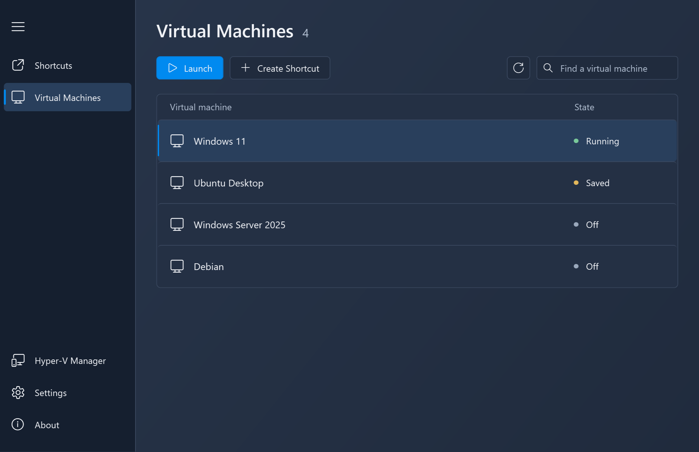
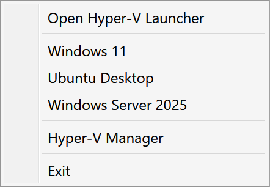
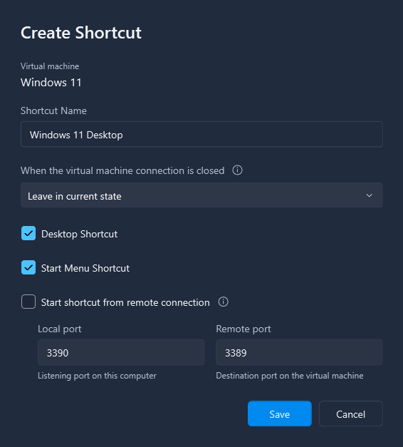
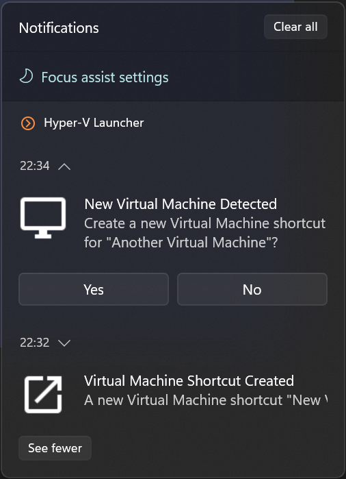

Hyper-V Launcher guide
Create shortcuts for local Hyper-V virtual machines, launch them from the system tray, and choose what happens when you close a VM connection.
Requirements and installation
Hyper-V Launcher runs on Windows x64 and manages virtual machines on your local computer. You need Hyper-V enabled and a VM already created in Hyper-V Manager.
For a Windows desktop host, Microsoft lists Windows 10 or Windows 11 Pro and Enterprise as editions that support Hyper-V. Windows Home does not include the Hyper-V role. Your hardware must also support virtualization. See Microsoft’s Hyper-V requirements and instructions for enabling Hyper-V.
Download Hyper-V Launcher, run the setup, then open Hyper-V Launcher Console from the Start Menu. Use Hyper-V Manager to create and configure your VMs before adding launcher shortcuts.
Create a desktop shortcut for a Hyper-V virtual machine
A shortcut opens a local VM without navigating through Hyper-V Manager each time. You can place it on your desktop, in the Start Menu, or both.
- Open Virtual Machines in Hyper-V Launcher.
- Select the VM you want to use and click Create Shortcut.
- Enter a shortcut name that you will recognize.
- Select Desktop Shortcut, Start Menu Shortcut, or both.
- Choose what should happen when the VM connection closes, then click Save.
Double-click the desktop shortcut or open it from the Start Menu. Hyper-V Launcher starts a stopped or saved VM before opening its connection window.
You can also select a configured shortcut on the Shortcuts page and click Launch. To change its name or close action later, select it and click Edit.


Launch Hyper-V virtual machines from the system tray
Click or right-click the Hyper-V Launcher icon in the Windows notification area, then select a configured shortcut from the menu. The shortcut uses the same close action as when launched from the desktop.
If the icon is hidden, check the notification area’s hidden icons menu. Choose Hyper-V Launcher Console in the tray menu to manage your shortcuts.
In Settings, enable Start on Windows login to have the tray application start when you sign in. A VM must have a configured shortcut to appear in the tray menu.


Pause or shut down a VM when its window closes
Each shortcut has its own close action. Choose it when creating a shortcut, or select an existing shortcut on the Shortcuts page and click Edit.
- Leave in current state
- Closing the connection window does not request a VM state change. A running VM can keep running in the background.
- Pause the Virtual Machine
- This option saves the VM’s state. Launching the shortcut again starts the saved VM so you can continue from that state.
- Shutdown the Virtual Machine
- Requests a guest shutdown. The implementation can fall back to turning off the VM when a particular shutdown failure occurs, so save your work inside the guest before closing the connection.
Click Save, then launch the configured shortcut to use the selected action. The action runs when that shortcut’s VM connection window closes. Opening a separate connection directly through Hyper-V Manager does not use the shortcut’s close action.


Automatically create and clean up VM shortcuts
Open Settings to choose how newly created and deleted VMs are handled. Settings are saved as you change the checkboxes.
- Enable Automatically create Virtual Machine shortcuts to create a shortcut when a new VM is detected. Choose Create Desktop shortcut and Create Start Menu shortcut for the locations you want.
- If you prefer to decide each time, turn off automatic creation and enable Show a new shortcut prompt when a new Virtual Machine is created. The prompt option is disabled while automatic creation is enabled.
- Enable Automatically delete shortcuts when a Virtual Machine is deleted to remove the associated shortcuts when deletion is detected.
These settings handle VM creation and deletion events. For machines you already have, create shortcuts from the Virtual Machines page. Automatic creation and cleanup depend on the installed Hyper-V Launcher Service.


Troubleshooting Hyper-V Launcher
My virtual machine is not listed
Open Hyper-V Manager and confirm the VM exists on this computer. Hyper-V Launcher lists local VMs, not those on a remote host. Confirm Hyper-V is enabled and that you can access the local VM in Hyper-V Manager, then reopen the launcher to reload the list.
The VM is listed, but there is no desktop shortcut
A VM in the Virtual Machines list is not necessarily a configured shortcut. Select it, choose Create Shortcut, select Desktop Shortcut, and save. Automatic creation applies to newly detected VMs; it does not create desktop shortcuts for every existing machine when enabled.
The tray icon or a tray shortcut is missing
Check the hidden icons menu and confirm the tray application is running. If you closed it, you can start HyperVLauncher.Apps.Tray.exe from your Hyper-V Launcher installation folder. Enable Start on Windows login for future sign-ins. If only a VM entry is missing, check that it has a shortcut on the Shortcuts page.
The close action did not run
Check the action saved on the shortcut you launched. Use that configured shortcut rather than a connection opened directly in Hyper-V Manager, and close the VM connection window rather than just the launcher’s management window.
Automatic shortcut creation or deletion is not working
Check the corresponding checkbox in Settings. Open Windows Services and check that Hyper-V Launcher Service is running. Creation and deletion have separate settings; enabling one does not enable the other.